Bien que les deux fonctions semblent identiques, en réalité, ils remplissent des tâches différentes :
La fonction NB retourne le nombre de cellules qui contiennent des nombres.
La fonction NBVAL retourne le nombre de cellules non vides dans une plage donnée.
La figure ci-dessous illustre la fonction de chacune d'entre-elles. La plage contient 3 valeurs numériques et
2 valeurs non numériques et une cellule vide.
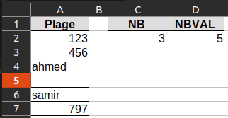
Fonctions NB et NBVAL
Activité 4
Dans une usine les ouvriers bénéficient d'une prime de rendement en fonction de leurs rendements moyens et de
leurs absences.
La feuille suivante montre le nombre de pièces fabriquées par les ouvriers d'une section de
l'usine, ainsi que leurs absences (cellules vides).
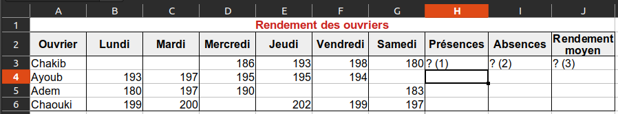
Calcul d'un nombre de cellules non vides
On demande de :
Calculer le nombre de jours de présnces d'un ouvrier.
On souhaite retrouver le degré de satisfaction d'un client d'un restaurant. Les clients notent le service
d'une
façon anonyme les service du restaurant en utilisant de 0 à 5 étoiles.
On demande de :
Calculer le pourcentage de satisfaction, pourcentage de satisfaction = nombre d'étoiles * 20
Calculer le degré de satisfaction du client :
Satisfait, si le pourcentage >= 80
Insatisfait, si le pourcentage < 80
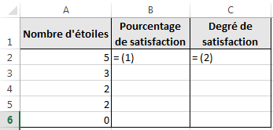
Calculer le degré de satisfaction d'un client en utilisant la fonction SI
Un développeur de circuits imprimés souhaite faire des statistiques sur le nombre de cartes développées en
fonction de leurs surface. Pour cela il a dressé le tableau suivant :
On demande de calculer le nombre de cartes de chaque catégorie.
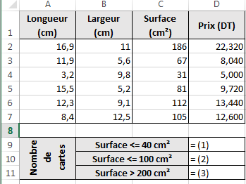
Calculer le nombre de cartes électroniques selon leurs dimensions en utilisant la fonction
NB.SI
Un drugstore dispose d'un stock de pièces de monnaie de valeur (50 Millimes) et (100 Millimes), pour compter
le
montant total de pièces il a dressé le tableau suivant dans un tableur :
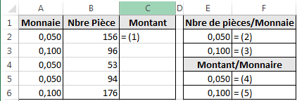
Calculer le montant pour chaque type de pièce de monnaie en utilisant la fonction SOMME.SI
(1) =A2*B2
(2) =SOMME.SI(A2:A6;0,05;B2:B6)
ou
=SOMME.SI($A$2:$A$6;E2;$B$2:$B$6)
(3) =SOMME.SI(A2:A6;0,1;B2:B6)
(4) =SOMME.SI(A2:A6;0,05;C2:C6)
ou
=SOMME.SI($A$2:$A$6;E2;$C$2:$C$6)
(5) =SOMME.SI(A2:A6;0,1;C2:C6)
L'opération de tri consiste à ordonner les éléments d'un tableau selon les valeurs d'une ou
de plusieurs colonnes en ordre croissant (du plus petit au plus grand) ou en ordre décroissant.
Procédure de tri
Sélectionner la plage de données à trier (dans l'exemple A1:B9)
Dans l'onglet Accueil, rubrique Edition, cliquer pour dérouler le menu
Sélectionner Tri personnalisé...
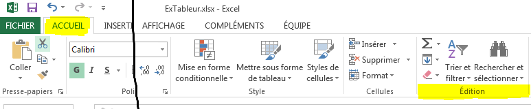
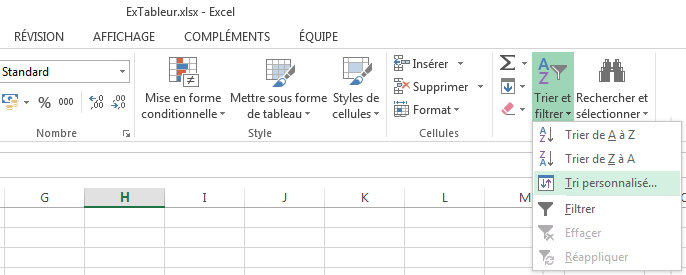
Procédure de tri, étape 2/3
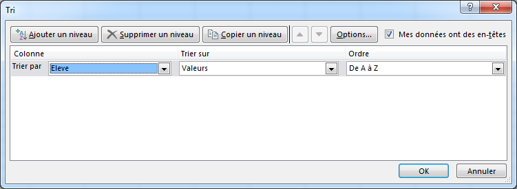
Procédure de tri, étape 3/3
Activité 14
Nous souhaitons ordonner un groupe d'élève en ordre croissant de leurs noms.
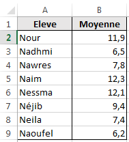
Tableau non ordonné
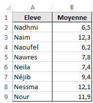
Tableau ordonné par ordre alphabétique des noms des élèves
La mise en forme conditionnelle permet de mettre en forme les cellules (Couleur, Remplissage, Bordure, etc.)
selon un ou plusieurs critères.
Procédure
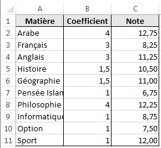
Notes de l'élève avant la mise en forme
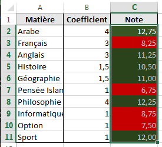
Notes de l'élève après la mise en forme conditionnelle
Sélectionner la plage de cellules C2:C11
Dérouler le menu Mise en forme conditionnelle, cliquer la commande Gérer les règles...
Le dialogue Gestionnaire de règles de mise en forme conditionnelles apparaît sur l'écran, cliquer
le
bouton Nouvelle règle...
Le dialogue Nouvelle règle de mise en forme est affichée, sélectionner l'option Appliquer une
mise
en
forme uniquement aux cellules qui contiennent
En bas du dialogue, modifier le contenu des champs du formulaire : Valeur
de la celluleinfèrieure
à10
Cliquer sur le bouton Format... pour définir la mise en forme nécessaire,
Refaire les étapes 3, 4, 5 et 6, pour colorier en vert
les cellules dont la Valeur
de la cellulesupèrieure
ou égale à10.
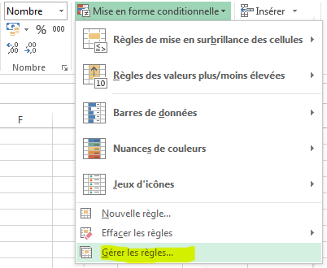
Etape 2/5, dérouler le menu Mise en forme conditionnelle
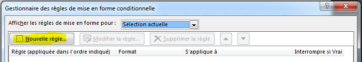
Etape 3/5, le dialogue Gestionnaire de règles de mise en forme conditionnelles apparaît sur
l'écran
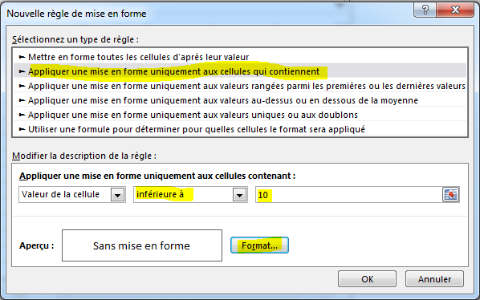
Etape 4/7 et 5/7, le dialogue Nouvelle règle de mise en forme
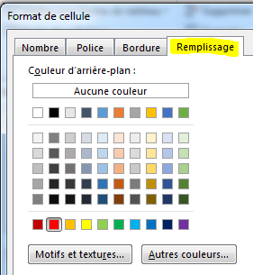
Etape 6/7, sélectionner le format de cellule
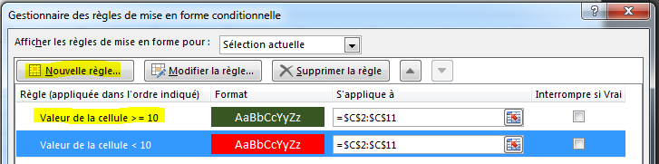
Etape 7/7, le Gestionnaire de règles de mise en forme conditionnelles contient les deux règles
souhaitées
📹 Activité 17
On demande de colorier :
en rouge
les notes infèrieures à 10,
en vert
les notes supèrieures ou égales à 10.
Notes de l'élève avant la mise en forme
Notes de l'élève après la mise en forme conditionnelle
Mettre en rouge les matières ayant un coefficient supérieur ou égal à 3, en
vert les matières ayant un coefficient
1,5 et en bleu les matières ayant un coefficient 1.
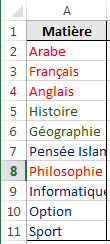
Résultat de la mise en forme conditionnelle
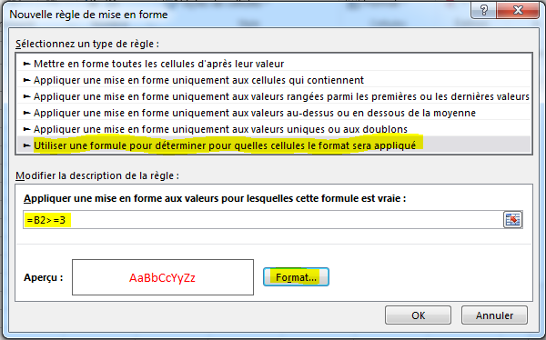
Utiliser une formule pour déterminer pour quelles cellules le format sera appliqué
L'ensemble des règles de mise en forme utilisée dans cette activité
Le tableur permet de filtrer les données afin d'en extraire les
informations les plus utiles. En Excel il existe deux types de filtres :
Le filtre automatique pour filtrer les données du tableau sur place
selon des critères simples. Le filtre automatique affiche uniquement les lignes du tableau qui répondent aux
critères de filtrage et cache les autres. Pour retrouver toutes les données du tableau, il suffit alors de
désactiver le filtre automatique.
Le filtre élaboré qui permet d'extraire uniquement quelques colonnes du tableau
qui répondent aux critères dans un autre emplacement du classeur ou sur place. Avec le filtre
élaboré il est possible de définir des critères d'extraction plus sophistiqués et de
sélectionner uniquement quelques colonnes à afficher.
Filtre automatique
Le filtre automatique filtre les données en place. Il est principalement destiné à explorer
les données. Et il supporte uniquement les conditions simples.
📹 Activité 19
La société El Ettihad a effectué des achats pour mettre à jour son parc informatique.
Le gestionnaire de l'entreprise veut connaitre quels sont les article qui possède une TVA de 8% (type
C). Pour celà on recommande un filtre automatique.
Le filtre élaboré offre plus de flexibilité et de possibilités que le filtre
automatique. Il permet d'extraire les données vers un autre emplacement du classeur sans nécessiter de
copier/coller.
Avec ce filtre on doit obligatoirement définir :
La zone de critère : qui contient les conditions requis
La zone d'extraction : qui contient les noms des champs à extraire
📹 Activité 21
On demande d'extraire le nom d'Article, le Prix Unitaireet la
Quantité des articles de Type B.
Définir la zone de critère qui contient les conditions à vérifier. Il est conseillé de copier/coller les noms des colonnes à partir du tableau
principal
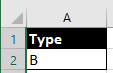
Définir la zone de critère
Définir la zone d'extraction qui contient les noms des colonnes à
extraire.
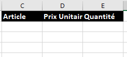
Définir la zone d'extraction
Ouvrir Données > Filtre avancé
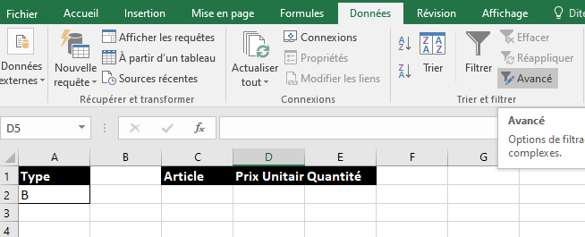
Définir la zone d'extraction
Remplir les champs du formulaire qui apparait sur l'écran :
Cocher Copier vers un autre emplacement
Sélectionner la Plages qui contient toutes les données
Sélectionner la Zone de critères qui contient les conditions à vérifier
Sélectionner la Zone d'extraction (Copier dans) qui contient les
noms des colonnes à extraire
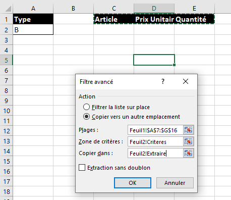
Remplir les champs du formulaire
Le résultat d'extraction s'affiche dans la Zone d'extraction.
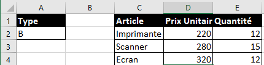
Résultat de l'extraction
📹 Activité 22
Utiliser un filtre élaboré pour extraire dans une nouvelle feuille:
Les Articles et Prix Unitaires des articles dont le Prix
Unitaire est entre 100 et 300.
Les Articles, les Quantités et Prix Unitaires des
articles dont la Quantité est supèrieure à 30.
Les Articles et les Montant TVA des articles de Type C.
Graphiques
Définition
Le tableur permet d'illustrer les tables de calculs par des graphiques.
📹 Activité 15
Un magasin possédant des filiales dans plusieurs villes souhaite comparer les ventes d'un article dans ses
filiales pour les année 2016, 2017 et 2018. Pour cela, il dresse le tableau suivant :
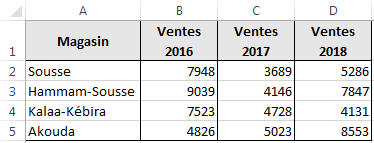
Historique des ventes d'un article dans les magasins